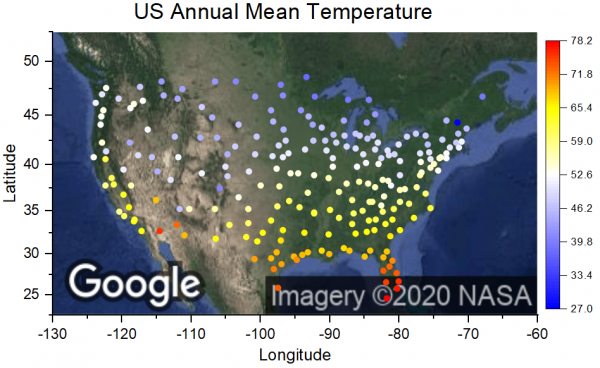
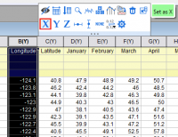
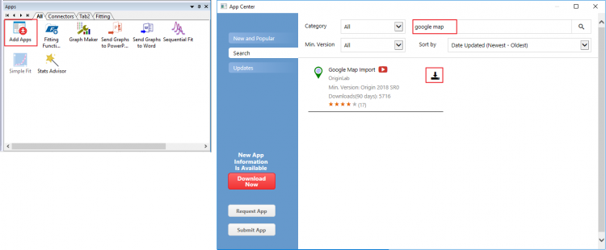
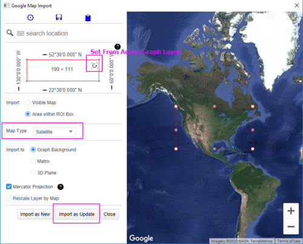
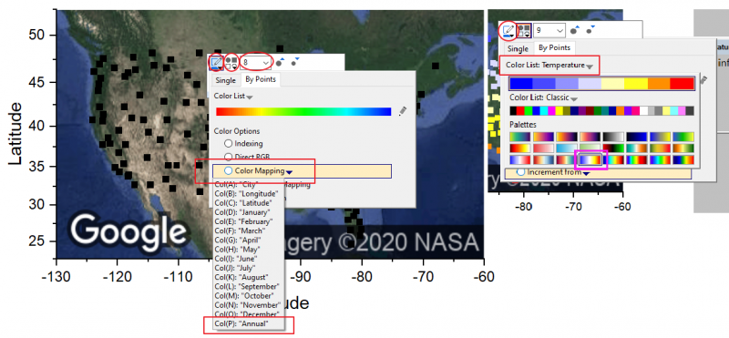
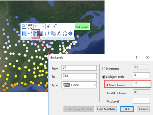

Google Map zu Origin-Diagramm hinzufügen
Google-Map
Zusammenfassung
Dieses Tutorial zeigt Ihnen, wie Sie ein Diagramm mit Google Map als Hintergrund erstellen.
- 
Was Sie lernen werden
Dieses Tutorial zeigt Ihnen, wie Sie:
- die App Google Map Import über das App Center herunterladen.
- die App verwenden, um Google Map zu einem Diagramm hinzuzufügen.
Schritte
- Öffnen Sie eine neue Arbeitsmappe. Wählen Sie im Menü Daten: Mit Datei verbinden: Text/CSV. Wählen Sie die Datendatei <Origin-Verzeichnis>\Samples\Graphing\US Mean Temperature.dat, um eine Verbindung zu ihr herzustellen. Klicken Sie bei Standardeinstellungen im Dialog auf OK.
- Wählen Sie den Header von Spalte B und klicken Sie auf X auf der angezeigten Minisymbolleiste. Dies setzt die Spalte B als X.
- Markieren Sie den Header von Spalte C und wählen Sie im Menü Zeichnen: Einfache 2D: Punktdiagramm, um ein Punktdiagramm zu erstellen.
- 
- Klicken Sie auf das Symbol Apps hinzufügen im Fenster Apps, das auf der rechten Seite des Origin-Arbeitsbereichs angesiedelt ist, und suchen Sie nach google map. Klicken Sie dann auf die Schaltfläche Download, um sie herunterzuladen.
- 
- Starten Sie bei aktivem Punktdiagramm die App Google Map Import. Klicken Sie zuerst auf die Schaltfläche Set From Active Graph Layer, um den Rahmen des Bereichs der USA im Vorschaufenster neu zu positionieren. Ändern Sie den Map Type in Satellite. Klicken Sie dann auf die Schaltfläche Import as Update. Die Google Map wurde jetzt als Hintergrund zum aktiven Diagramm hinzugefügt. Schließen Sie die App.
- 
- Klicken Sie auf ein Symbol, um die Minisymbolleiste aufzurufen. Setzen Sie die Symbolgröße auf 6 und den Symboltyp auf gefüllten Kreis. Ändern Sie die Symbolfarbe in Nach Punkt und die Farbabbildung Col(P)"Annual". Verwenden Sie die Minisymbolleiste, um die Palette in Temperature zu ändern.
- 
- Klicken Sie auf das Symbol und wählen Sie Ebenen festlegen auf der Minisymbolleiste. Ändern Sie im Dialog # Nebenebenen in 10.
- 
- Klicken Sie auf die Schaltfläche Anti-Aliasing aktivieren/deaktivieren auf der Symbolleiste Diagramm rechts vom Origin-Arbeitsbereich, um den Kreis im Diagramm zu glätten.
- Löschen Sie die Legende. Klicken Sie auf die Schaltfläche Farbskala hinzufügen auf der Symbolleiste links, um eine Farbskala hinzuzufügen.
- Klicken Sie mit der rechten Maustaste auf die Farbskala und wählen Sie Eigenschaften. Wählen Sie Ebenen im linken Bedienfeld und aktivieren Sie das Kontrollkästchen Erste Ebene ausblenden und Letzte Ebene ausblenden. Wählen Sie auf der linken Seite Beschriftungen, deaktivieren Sie das Kästchen Auto rechts und ändern Sie Benutzerdefiniertes Format in *3, um nur 3 signifikante Stellen auf der Farbskala zu zeigen. Klicken Sie auf OK.